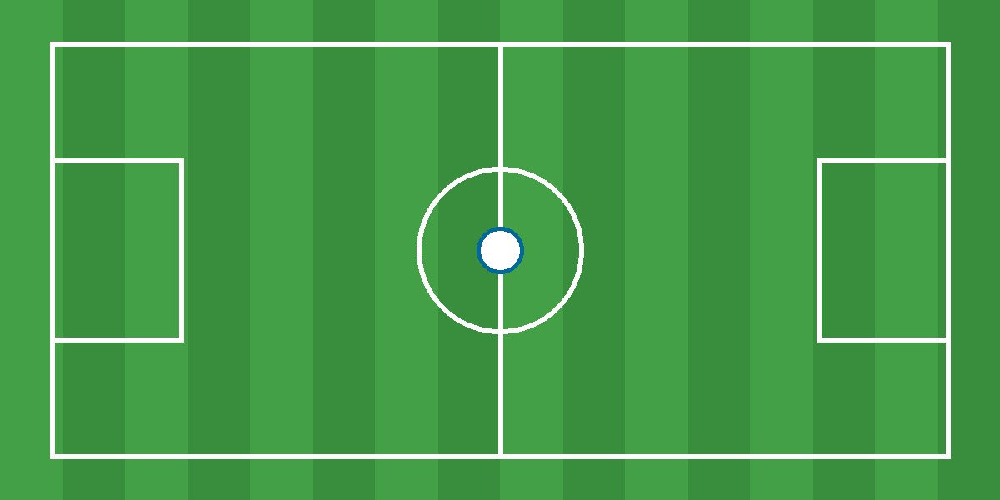

Referees
Help a sports club by refereeing a match when they do not have enough referees available.
Finding a referee, bar volunteer or coach can sometimes be difficult for sports clubs. SportWerc makes it easier to find people who are willing to help.
Clubs can post tasks and volunteers can find a task that fits their time and interests.
Help a sports club by refereeing a match when they do not have enough referees available.
Clubs can also look for volunteers to help behind the bar during matches and events.
Clubs can post other tasks such as coaching, event support or helping with club activities.
